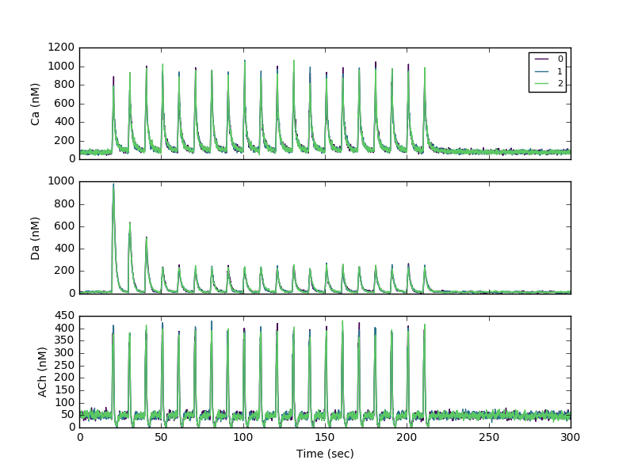
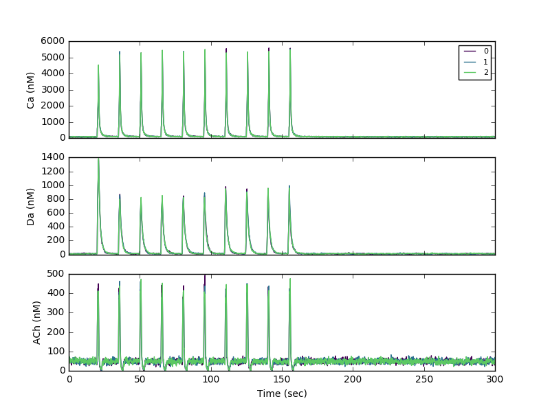

Model files for simulating the signaling pathways underlying striatal LTP and LTD
Published in Blackwell et al., European J. Neuroscience 2018
Signaling pathways include:
- dopamine D1R coupled pathways (activatin of Gs subtype of GTP binding protein, leading to cAMP, PKA and Epac)
- calcium activated pathways (leading to PP2B,
- metabotropic glutamate mGluR1/5 coupled pathways (activation of Gq subtype of GTP binding protein, leading to PLC and DAG)
- muscarinic acetylcholine receptors: M1R (Gq coupled) and M4R (Gi coupled - inhibition of cAMP)
- Molecules mediating interaction of these pathways, such as DARPP-32
This model represents a synthesis/merger of the models presented in Oliveria et al. PLoS Comp Biol 2012 and the model presented in Kim et al. PLoS Comp Biol 2013.
Modelxxx.xml contain the entire model specification, which combines Reaction file (Rxn.xml), Morphology file (Morph.xml), initial conditions file (IC.xml), output file (Out.xml) and stimulation (Stim*.xml). Most simulation experiments involve changing the stimulation. To run simulations, use NeuroRDv3.2.3:
java -jar /home/neuroware/stochdif/neurord-3.2.3-all-deps.jar Modelfile.xml
The two main (control) Model files are:
- Model_SPNspineAChm4R_Gshydr5_GapD-stim20hz-noReb_lowDaDec3.xml
- Model_SPNspineAChm4R_Gshydr5_GapD-stimtheta-noReb_DaDec1.xml
Variations on running the models, e.g. by specifying initial conditions from a different (e.g. equilibrium) simulation, or running multiple trials, are illustrated in NeuroRD.bat, and explained in https://github.com/neurord/stochdiff
Model output was processed using the python programs in https://github.com/neurord/NeuroRDanal
- nrdh5_anal.py produce graphs of molecules for one or more files, and optionally will generate output files of molecule concentration versus time for various morphology subregions.
- sig.py calculates one or two "signatures" from sets of molecules by adding together the specified molecules. E.g. to calculcate the total PKA phosphorylated DARPP-32, you would add D32p34PP1 and D32p34.
- sig2.py calculates the mean value of a set of molecule signatures at specified time points to use in statistical analysis.
The Model reaction kinetics and molecule quantities are summarized in MSPN-mergeRateConstTable.xls, along with a list of all the different models, and publications that provided data for constraining the model. There are two main sets of model files:
- those used to constrain to model. These include simulations of the change in DARPP-32 phosphorylation in response to bath applied drugs, and simulations of depolarization induced suppression of inhibition.
- Synaptic plasticity protocols. These include both stimulation protocols with known outcomes, and stimulation protocols not yet measured experimentally.
Output files (prior to processing with NeuroRDanal) are provide as .h5 files for all but the long dendrite simulations due to size.
Entire repository, including Notebook files, are available at https://github.com/neurord/D1pathways
Additional running instructions:
To run the main simulations, use the following syntax:
First, run the simulations with no stimulation to reach steady state:
java -jar /home/neuroware/stochdif/neurord-3.2.3-all-deps.jar Model_SPNspineAChm4R_Gshydr5_GapD-nostim.xml
Then, use output from the above as initial conditions, and run the main simulations for three trials each:
java -jar /home/neuroware/stochdif/neurord-3.2.3-all-deps.jar --ic-time -1 --ic Model_SPNspineAChm4R_Gshydr5_GapD-nostim.h5 -v -s injections -Dneurord.trials=3 Model_SPNspineAChm4R_Gshydr5_GapD-stimtheta-noReb_DaDec1.xml &
java -jar /home/neuroware/stochdif/neurord-3.2.3-all-deps.jar --ic-time -1 --ic Model_SPNspineAChm4R_Gshydr5_GapD-nostim.h5 -v -s injections -Dneurord.trials=3 Model_SPNspineAChm4R_Gshydr5_GapD-stim20hz-noReb_lowDaDec3.xml &
To generate output files for creating panels for figure 2A-C, run nrdh5_anal.py
First, set outputavg=1 in nrdh5_anal.py to produce output files. Then, from within python type
>>> ARGS="/full/path/to/Model_SPNspineAChm4R_Gshydr5_GapD-stim20hz,noReb,Ca Da ACh,10 20"
>>> execfile('/full/path/to/NeuroRDanal/nrdh5_anal.py')
This processes h5 files whose filename matches the following pattern: arg[0]+'-'+arg[1]+'*.h5'
And then produces output with filename = input_filename + molname+'avg.txt' - the output is the average over all trials (3 used in manuscript).
Sample 20 Hz run:

>>> ARGS="/full/path/to/ModelSPNspineAChm4R_Gshydr5_GapD-stimtheta-noReb_DaDec1,,Ca Da ACh,10 20"
>>> execfile('/full/path/to/NeuroRDanal/nrdh5_anal.py')
This processes the h5 file with filename=Model_SPNspineAChm4R_Gshydr5_GapD-stimtheta-noReb_DaDec1.h5 (since no parameters given)
To create the figure, plot the columns with suffix _dend for the dendrite and _sa1[0] for the spine.
Sample theta burst stimulation run:

To generate output files for creating panels for figure 4, run sig.py as follows:
First, set outputavg=2 in sig.py to produce output files. Then, from within python type
>>> ARGS="/full/path/to/Model_SPNspineAChm4R_Gshydr5_GapD-stim20hz-noReb_lowDaDec3,,PkcCaDag,Epac1cAMP,10 20,,Pkc Epac1"
>>> execfile('/full/path/to/NeuroRDanal/sig.py')
>>> ARGS="/full/path/to/Model_SPNspineAChm4R_Gshydr5_GapD-stimtheta-noReb_DaDec1,,PkcCaDag,Epac1cAMP,10 20,Pkc Epac1"
>>> execfile('/full/path/to/NeuroRDanal/sig.py')
The last two arguments (args[6]) give the suffix for the output file,
This produces output for Figures B and D with filename = input_filename + outputfile_suffix+'_plas.txt'
Plot the columns with prefix nonspine for the right side (Dendrite) of the figure, and the columns with prefix sa1[0] for the left side (Spine) of the figure. In the column headings, the suffix _t0, _t1, _t2 indicate trials 0, 1 and 2 - all of which are shown in the figures.
For PKA phosphorylation targets: need to sum together several molecules:
pDaD1RGs pGsD1R pPDE10 pPDE10cAMP pPDE4 pPDE4cAMp D32p34 D32p34PP1 D32p34PP1PP2BCamCa4 D32p34PP1PP2BCamCa2C
For phosphorylated CamKII, also need to sum together several molecules:
CKpCamCa4 Dgl_CKpCamCa4 CaDgl_CKpCamCa4 Dgl_CKp CKp
sig.py does this - you just give several molecules instead of a single molecule for arguments 2 and 3 as follows:
>>> ARGS="/full/path/to/Model_SPNspineAChm4R_Gshydr5_GapD,stim noReb,pDaD1RGs pGsD1R pPDE10 pPDE10cAMP pPDE4 pPDE4cAMp D32p34 D32p34PP1,CKpCamCa4 Dgl_CKpCamCa4 CaDgl_CKpCamCa4 Dgl_CKp CKp,10 20,,PKAphos CKpCam"
Above shows how to use two parameters (stim and noReb) to construct pattern to specify multiple files.
>>> execfile('/full/path/to/NeuroRDanal/sig.py')
This produces output for figures A and C in Figure 4.
Experimental data
The file 20160830_EPACsh150_100nMISO_RawRatios.xls tabulates the
FRET ratio versus time in response to 100 nM isoproteronol using the
Epac cAMP sensor. The second time column is the time relative to
drug application. The measurements were made at four different
locations: soma, proximal dendrites (prox), intermediate dendrites
(inter) and distal dendrites (dist). Sheet2 and sheet3 shows the
calculation of % increase in FRET for two distal and two proximal
dendrites to highlight the greater FRET signal increase in the
thinner distal dendrites.
20181120 Note: The excel file of experimental data
20160830_EPACsh150_100nMISO_RawRatios.xls (see above description) was
added to this archive.